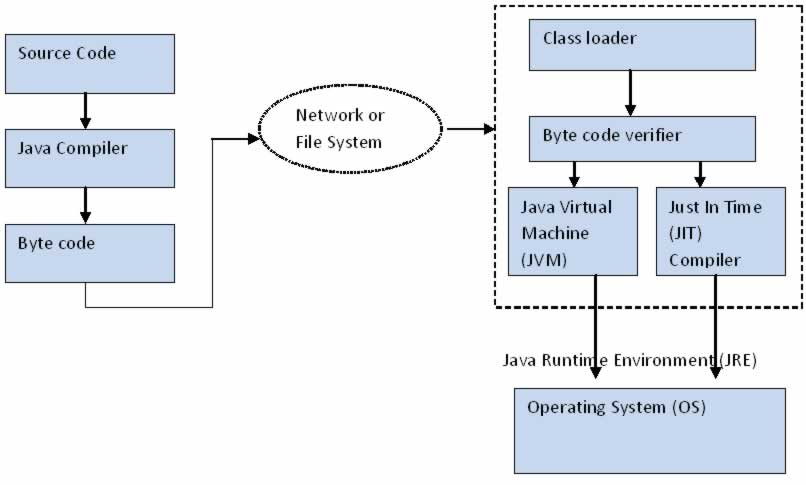

Introduction
The principles of object-oriented programming, such as modularity and reusability, are quite popular as they help in reducing the complexity of programs. In order to implement such principles in real world applications, such as library management and inventory management, you need to make use of an object-oriented language, such as Java.
What you should already know
This guide assumes you have the following basic background
- A general understanding Logic building and effective problem solving
- Database knowledge such as SQL Server, MySQL, MongoDB etc.
Identifying the Features of Java
Java porvides powerful Features that make it a popular and widely used programming language. Some of the Features are:
- Simple: When an object is created, memory needs to allocated. Later on, when the object is no longer required, the allocated memory to the object should be released. In Java memory allocation and deallocation happens automatically. The process of automatically deallocating memory is called garbage collection.
- Object-oriented: Java is an Object-oriented language and it incorporates the various characteristics of an object-oriented language, such as inheritance and polymorphism. in Java the entire program code must be encapsulated inside a class.
- Platform independence: In Java, when compile an erro-free code, the compiler converts the program to a platform independent code, known as the bytecode. Therfore, the Java Virtual Machine(JVM) interprets this bytecode into the machine code that can be run on that machine. converting a Java program into bytecode makes a Java program platform independent because any computer installed with the JVM can interpret and run the bytecode.
- Portable: Portability refers to the ability of a program to run on any platform without changing the source code of the program. The program developped on a computer can run on another computer, which might have a different operating system. Java enables the creation of cross-platform programs by converting the programs into Java bytecode.
- Distributed: Java can be used for the development of those applications that can be distributed on multiple machines in a network, such as the Internet. These applications can be used by multiple users from multiple machines in a network. For this pourpose, Java support the various Internet protocols, such as Transmission Control Protocol and Internet Protocol(TCP/IP) and Hyper Text Transfer Protocol(HTTP).
- Secure: Java has built-in features that ensure that a Java program gains access to only those resources of a computer that are essential of its execution. This ensure that a Java program executing on a particular machine does not harm it.
- Robust: Java provide various features, such as memory management and exception handling, which make it a robust programming language. These features ensure that the Java application run securely and effectively on a machine and do not crash a machine if minor errors are encourtered.
- Multithreded: Java provide the concept of multithreding that allows a program to simultaneously execute multiple tasks by using threads. A thread is samllest unit of execution in a Java program.
Java Architecture
The Java Archnitecture defines the components that are essential to carry out the creation and execution of code written in the Java programming language. The various components of th Java architecture are:
- Source File
- Class File
- Java Virtual Machine(JVM)
- Application Programming Interface (API)
The various components in the Java architecture are shown in the following figure.
Components
Source File: Java is robust programming language that enables developers to build a wide variety of applicatios for pourposes. In order to write a Java program or an application, you need to write certain code. A Java application contains the source code tha enables an application to provide its desired functionalities. This source code is saved in a source file with the extension, .java.
Class File: Once created, a .java file is complied to generate the .class file. A class file contains the bytecode that is generated by the compiler. Further, this class file can be executed by any machine that supports the Java Runtime Environment(JRE).
JVM: The JVM is an application that is resposible for execution Java programs on a computer. It resides insides in the Random Access Memory (RAM) and is specific for every platform, such as Sun and Macintoch. The bytecode generated during the compilationof a programis the machine language of the JVM. JVM is resposible for executing the bytecode and generating the machine specific code for the machine on which the Java program needs to be executed.
The major components of JVM are:
- Class loader
- Byte code veridier
- Java Virtual Machine and Just in Time(JIT) compiler
Hello world
public class hello{
public static void main(String[] args){
System.out.println("Hello World");
}
}
Variable
A variable is used essentially for the storage of varying of data. The main use of a variable is to store and manipulate data or values in Java Programs. A variable represents a name that refers to a memory location where some value is stored.
The following code show how to declare variables
int choice; //single declaration of the same type
int num1, num2; //multiple declaration of the same type
The following code snippet show how to assign value to a variable
int num1 = 5; //single declaration of the same type
You can also assign the same value to more than one variable in a single statement. The following code snippet shows the assignment of the same value to more than one variable:
int num1, num2 = 5; //multiple declaration of the same type
Methods
A method is a set of statements that is intended to perform a specific task. For example, a compute() method can be used for computing the score. Moreover, methods provide encapsulation and are also to refer to the data members and access them. A method consist of two parts, method declaration and method body.
Example of a method
public void Calculate(){
int num1, num2, result;
num1 = 5;
num2 = 8;
Resul = sum(num1,num2)
}
Example
Here is a simple example a java program
import java.util.Scanner;
public class hello{
Scanner scan = new Scanner.System.in();
public void Calculate(){
int num1 = 5, num2 = 8, Result;
Result = num1 + num2;
}
public static void main(String[] args){
hello obj = new hello();
obj.Calculate();
}
}
Reference
All the documentation of this page is taking from Oracle Tutorials